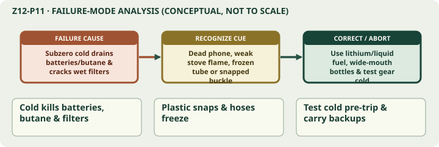

Z12-P11 · Extreme environments · New manuscript
Recognize cold-weather stove, fuel, battery and zipper degradation
Anticipate mechanical and chemical cold failures across field gear before subzero air strands a party.
When it applies · Any outing where temperatures dip below 20°F (−7°C) down to extreme northern cold.
Equipment · Cold-tested gear (liquid/inverted stove, lithium batteries, wide-mouth bottles, boiling backup and repair tape).

Actions
- Anticipate four major cold breakdowns: (1) alkaline and phone batteries lose capacity rapidly (prefer cold-rated lithium cells kept warm), (2) upright butane canisters lose vapor pressure, (3) wet hollow-fiber filters crack invisibly when frozen.[E02, C15, W28]
- Anticipate mechanical cold brittleness: plastic pack buckles snap under sharp impact, frozen zippers jam on ice glaze, hydration hoses freeze solid and liquid white gas causes instant frostbite if spilled on bare skin.[K07, E15, C15, T04]
- Test every critical winter gear item outdoors in freezing temperatures at home BEFORE trusting it on an overnight trip, keeping independent low-tech backups ready.[E02, W26, ED]
Failure recognition · Discovering at −10°F that an upright canister stove barely flickers, the hydration tube is frozen solid and the wet water filter cracked overnight.[C15, W28, E02]
Verify · Confirm lithium/warmed power, cold-capable stove/fuel, wide-mouth water carry, dry/protected filter or boiling plan and gentle buckle handling.[E02, W28, C15, ED]
Stop or change course · When primary cold-weather gear fails and backups cannot sustain warmth or hydration, abort onward travel immediately and exit to warm refuge.[E02, W26, E06]
Evidence and editorial notes
- C15 · NPS · Wildland Fire Safety (current web edition)
- Section: Wildland Fire Safety > Campfires and Stoves · Conditions: Outdoor cooking with portable liquid or canister stoves
Support: Operate stoves on level cleared ground away from tents and dry fuels, cool completely before refueling, and move away from any spilled fuel before lighting.
Limitations: Fuel canisters behave differently in cold weather and high elevation; follow manufacturer limits. · Conflicting evidence: None; aligns with CPSC-C and USFS-FIRE.
Editorial note: Governs stove setup, refueling isolation, and spill failure recognition. · Specialist reviewer: Portable appliance safety and fire prevention
Primary source · checked 2026-11-24 - E02 · NPS · Ten Essentials (current web edition)
- Section: Navigation; insulation; emergency shelter; emergency food and water · Conditions: Outdoor trips; adjust kit to season and route
Support: Carry essential systems including navigation, insulation, light, water and emergency shelter.
Limitations: Carrying items without practice or cold-weather verification does not ensure readiness. · Conflicting evidence: None; baseline kit system architecture.
Editorial note: Supports failure-mode packing and kit verification cards. · Specialist reviewer: Field education and search and rescue
Primary source · checked 2026-11-24 - E06 · CDC · Preventing Hypothermia (current web edition)
- Section: Recognizing and treating hypothermia · Conditions: Cold wet exposure; signs such as confusion, slurred speech, fumbling or drowsiness
Support: Suspected hypothermia warrants prompt help and protection from further cooling. It can occur above freezing if wet or chilled.
Limitations: Early mild shivering can mask rapidly worsening judgment impairment. · Conflicting evidence: None; aligns with ARC and WMS guidance.
Editorial note: Anchors exposure-to-medical escalation thresholds. · Specialist reviewer: Wilderness medicine
Primary source · checked 2026-11-24 - E15 · NWS · Cold Weather Safety (current web edition)
- Section: Cold Weather Safety > Wind Chill and Dressing for Cold · Conditions: Cold, windy conditions where exposed skin cools rapidly
Support: Wind removes the thin warm air boundary layer around skin and permeable fabrics, sharply accelerating heat loss and frostbite onset; windproof outer shells and sheltered microclimates mitigate convective loss.
Limitations: Wind chill charts apply to exposed skin and do not change freezing point of water or equipment. · Conflicting evidence: None; clarifies physical mechanism of convective heat loss.
Editorial note: Supports wind-block geometry, shell layering, and wind-chill risk decisions. · Specialist reviewer: Cold-weather shelter and meteorology
Primary source · checked 2026-11-24 - K07 · NPS · Ten Essentials (current web edition)
- Section: Repair Kit and Tools · Conditions: Field equipment repair during backcountry travel
Support: Carry a route-appropriate repair kit (duct/gear tape, multi-tool, cordage, patch supplies) matched to shelter, pack, stove and water gear; verify compatibility before departure.
Limitations: Field patches restore temporary function and do not restore full original storm or load ratings. · Conflicting evidence: None; aligns with E02 and E20.
Editorial note: Grounds field-repair kits, temporary patches and equipment failure limits. · Specialist reviewer: Field equipment safety
Primary source · checked 2026-11-24 - T04 · Wilderness Medical Society · Frostbite clinical practice guideline 2024 update (2024)
- Section: Field treatment scenarios and Table 1 · Conditions: Suspected frostbite outside immediate medical care
Support: Avoid refreezing. Whether to actively thaw depends on ability to keep tissue thawed and evacuate. Detailed treatment requires clinical review.
Limitations: Field assessment cannot reliably determine final tissue depth. · Conflicting evidence: Supersedes outdated rubbing or snow-pack thawing myths.
Editorial note: Retained for cross-zone cold-injury stop boundaries. · Specialist reviewer: Wilderness medicine
Primary source · checked 2026-11-24 - W26 · NPS · Two Ways to Purify Water (current web edition)
- Section: Two Ways to Purify Water · Conditions: Backcountry water treatment planning in National Parks
Support: Boiling and chemical/filtration methods each have fuel, time, weight, and organism-coverage trade-offs; match the primary method and backup to route conditions and follow directions.
Limitations: Does not resolve chemical spills or algal toxins. · Conflicting evidence: Aligns with CDC-T altitude and parasite limits.
Editorial note: Supports primary-plus-backup water treatment selection in Z04. · Specialist reviewer: Backcountry water safety
Primary source · checked 2026-11-24 - W28 · CDC · Water Treatment Options When Hiking, Camping, or Traveling (current web edition)
- Section: Water Treatment Options > Freeze Damage and Maintenance · Conditions: Hollow-fiber and ceramic filters used in freezing or near-freezing temperatures
Support: Freezing water inside a wet filter element can crack hollow fibers or ceramic pores invisibly, allowing untreated water to bypass the barrier; keep wet filters above freezing or replace suspect elements.
Limitations: Internal crack failure often shows no visible external leak. · Conflicting evidence: None; critical cold-weather filter failure mechanism.
Editorial note: Drives cold-weather filter protection and failure-recognition cards. · Specialist reviewer: Drinking-water treatment and cold-weather operations
Primary source · checked 2026-11-24
Source lineage · NPS winter gear, CDC filter limits and CPSC; new manuscript · Classification · New manuscript.